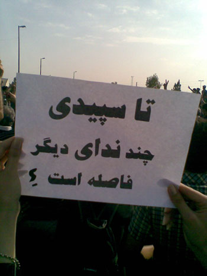
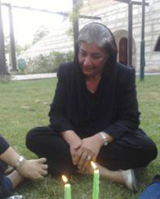
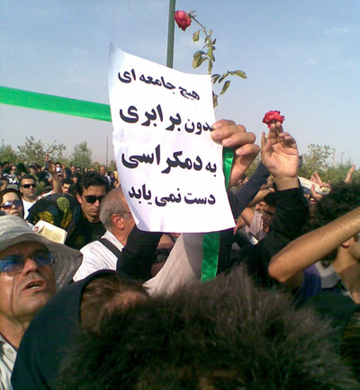
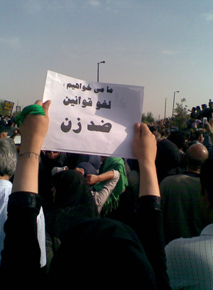
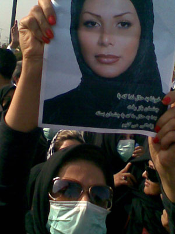
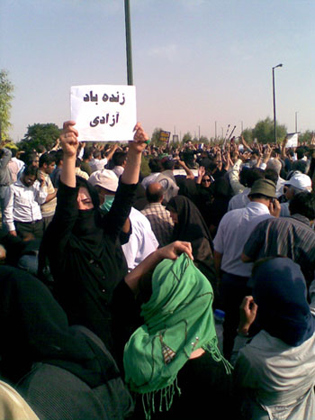

پذيرش > اخبار > کشتندت دخترم، اما تو چگونه این همه تکثیر می شوی/ گزارشی از شکوه یک اعتراض 8 مرداد، (...)

 کشتندت دخترم، اما تو چگونه این همه تکثیر می شوی/ گزارشی از شکوه یک اعتراض 8 مرداد، بهشت زهرا کشتندت دخترم، اما تو چگونه این همه تکثیر می شوی/ گزارشی از شکوه یک اعتراض 8 مرداد، بهشت زهرا
9 مرداد 1388 - - نسخه قابل چاپ

روایت شاهدان عینی
تغییر برای برابری - وقتي ساعت 30/15 روز پنجشبه 8/5/88 به بهشت زهرا می رسیم فكر مي كنیم جزء اولين نفرات هستيم. در گوشه وكنار ماشين هاي نيروي انتظامي و كاميون های سياهي را می بینیم كه براي دستگيري آمده اند. نيروي هاي يگان ويژه هم در كناري از سر بی حوصلگی روي چمن ها دور از چشم مردم دراز کشیده اند.

 در بهشت زهرا خودروهای سرگردان را می بینیم که به دنبال قطعه 257 مي گردند زیرا قبل از آنها عده ای تابلوی معرف قطعه و جهت نما را كنده اند. اما مردم همدیگر را و قطعه را پیدا کرده و از هم انرژي و قوت می گیرند: جواني كه چند هفته پيش در خاك سپاري سهراب اعرابي شركت كرده بود داد می زند من مي دانم. مزار ندا بايد همين جاها باشد؛ كناز سهراب. او همه را به محلي كه بايد مي رفتيم فرا می خواند. دورترها باتوم هايي كه در هوا مي چرخد و فريادهايي كه با گردو خاك وباد بالا مي رود تا به تاريخ بپيوندد ترا به خود مي خواند. جهت نما معلوم است :حضور مردم پيشرو، جمعيت ده ميليوني هميشه كارساز است. هزاران نفر بهشت زهرا را سیاه پوش کرده اند. در بهشت زهرا خودروهای سرگردان را می بینیم که به دنبال قطعه 257 مي گردند زیرا قبل از آنها عده ای تابلوی معرف قطعه و جهت نما را كنده اند. اما مردم همدیگر را و قطعه را پیدا کرده و از هم انرژي و قوت می گیرند: جواني كه چند هفته پيش در خاك سپاري سهراب اعرابي شركت كرده بود داد می زند من مي دانم. مزار ندا بايد همين جاها باشد؛ كناز سهراب. او همه را به محلي كه بايد مي رفتيم فرا می خواند. دورترها باتوم هايي كه در هوا مي چرخد و فريادهايي كه با گردو خاك وباد بالا مي رود تا به تاريخ بپيوندد ترا به خود مي خواند. جهت نما معلوم است :حضور مردم پيشرو، جمعيت ده ميليوني هميشه كارساز است. هزاران نفر بهشت زهرا را سیاه پوش کرده اند.
عادت جديد وتجربه جديد مردم حضور خانوادگي در تظاهرات است که هم نشانه همه گير وتوده اي شدن جنبش و هم حمايت نسل پيشين ازجوانان خانواده و حمايت از آنان در مقابل پليس و ممانعت از بازداشت شان .
قبرندا توسط نيروهاي يگان ويژه احاطه شده است و از دور می بینیم كه موتور سوارها با گاز اشك آور هم دور تا
 دور همين قطعه آماده ايستاده اند . مادر ندا که خودش اعلام کرده بود بر سر قبر ند حاضر می شود اعلام می کند که به دلایلی نمی تواند بیاید . او زمانی که جمعیت میلیونی برای بزرگذاشت چهلم ندا به بهشت زهرا می روند به تنهایی در پارکی به سوگ دخترش می نشیند.
به جمعيت كه نزديك می شویم ماشين مير حسين موسوي را می بینیم كه در ميان مردم و نيروهاي امنيتي و يگان ويژه به بيرون از در شرقي بهشت زهرا رانده مي شود. هزاران نفر شعار می گویند:" مرگ بر ديكتاتور" و بعضي از افراد يگان ويژه که با لباس هاي مخصوص هستند رويشان را از مردم برمی گردانند لبخند مي زنند ! و بعد هم کروبی است که به میان جمع می آید...
دوباره مردم به هم می پیوندند و شروع به شعار دادن می کنند، صدای فرمانده يگان ويژه از پشت بلند گو به گوش می رسد که مردم را در صورت نرفتن تهدید به حمله می کند. اما مردم آرام آرام شعار مي دهند و به پيش مي روند تا به آخر قطعه مي رسند. نيروهاي ديگري از سوي ديگري دوباره سر قطعه 257 حاضر مي شوند. گاه نیروهای سركوبگر خودشان را میان مردم می بینند و سعي مي كنند تنها نباشند و خونسرد عمل کنند.


برخورد زنان و مادران چشمگير است. بعضي از زنان ومادران به نيروهاي يگان ويژه گل مي دهند. نیروها مردد می گیرند و برخی هم نمی گیرند یا می گیرند و پرت می کنند. مي گویند برويد، برويد كاسه صبرمان لبريز مي شود برويد. اما زنان حتی به آنها خرما تعارف مي كنند و سعی می کنند با آنها حرف بزنند : "پسرم اينها مردم هستند. جوان ها را نزنيد كه بعدها شرمنده مردم نشويد !" اما برخی گوش نمی دهند و آماده حمله می شوند.

زني ميانسال و چادری از ميان جمعيت رو به مردم فرياد مي زند:" فرار نكنيد. تورا خدا فرار نكنيد. حمله كه مي كنند بايستيد مگر آن ها چند نفرند؟ اگر بايستيد اين آن ها هستند كه در مقابل اين جمعيت بايد فرار كنند. "
در جای دیگری درگیری رخ داده و مردم دو بسیجی راگرفته و کتک می زنند. یکی می گوید بکشیدش، دیگری می گوید نه ما که از جنس اونا نیستیم ، ولش کنید! دیگری می گوید : کارتش را بگیرید که در اينترنت بگذاريم كه فردا نيايند بگويند نيروهاي بسيج نبودند كه مردم را زدند و ...."


وقتي فاصله مردم وجوانان با گارد ويژه بسيار نزديك می شود و آن ها خونسرد مردم را نگاه مي کنند تاحمله كنند چندين زنان ميانسال جلوي صف می آیند و سعی می کنند با ایجاد زنجیره انسانی حائلي بين جوانان و گارد باشند.
فرياد بلند اين زنان اين روزها همه جا مانع لطمات بيشتر جوانان است که جلوه زيبايي از فداكاري مادرانه است.
رفته رفته كه اين جنگ و گريز ادامه می یابد مردم از قطعه 257 دور می شوند و صف طويلي از تظاهرات در خيابان هاي ديگر شكل می گیرد و دیگر قطعه 257 نیست که فریاد می زند اکنون تمام قطعات مجاور درگیر ماجرا شده اند. مردم ، زن و مرد در كنار يكديگر، شعار در دست یا تصویر شهدا در دست شعارمي دهند: نداي ما نمرده اين دولته كه مرده . عده اي ديگر فرياد مي زنندسهراب ما نمرده اين دولته كه مرده
از گوشه و كنار حوالي ساعت پنج بعداز ظهر حضور مردم بيشتر می شود. هر كس با عكسي از گمشده جان باخته اش مي آید. عكس نداها ،سهراب ها و كيانوش ها بر بالاي دست ها در حركت است. نه تنها عليه نيروهاي سركوب گر شعار می دهند که شعارها و نوشته های مربوط به زنان هم در دست های جمعیت دیده می شود

ما همه یک صداییم، ما همه یک نداییم / لغو قوانين ضد زن،/ آزادي بدون برابري !?/ دمكراسي بدون برابري زن و مرد معني ندارد/ تا سپيده چند نداي ديگر درراه است ؟ / زنده باد آزادي، زنده باد دمكراسي / مادرداغدارم ما همه فرزندان توايم/ ما همه ندا و سهراب و اشکان تواییم / ندای ما نمرده این دولت است که مرده / تنها نداست که می ماند،/ کشتندت دخترم، اما تو چگونه این همه تکثیر می شوی، / تغییر از پایین رخ می دهد ، همانچه در خیابان آفریدیم ،
ما مبارزه می کنیم : علیه تبعیض و نظامی گری / برای جهانی آزاد و برابر
ما مخالفیم با : تبعبض جنسیتی / تبعیض قومیتی/ تبعیض مذهبی / تبعیض فرهنگی / تبعیض اقتصادی
اولین مسافرانی که از قطار 57 پیاده کردند زن بودند،
امروز فرمان در دست زنان است
...
از كنارصف تظاهرات كنندگان رد مي شویم دختري با صداي بلند گريه مي كند و خطاب به پدرش كه از او می خواهد که بروند مي گوید: نمي روم ، نمي روم .
مادرش هم به كمكش می آید و خطاب به شوهرش : چه كارش داري خوب همه هستند بذار بیشتر بمونیم. شوهر می گوید آخه ولش کنیم می ره وسط جمعیت. زني دیگر دخالت می کند و و رو به زن می گوید خوب تو هم دست دخترت رو بگير مثل من و مراقبش باش. زن با ناراحتي می گوید: خوش به حال شما ها كه آقاتون بالا سرتون نيست زن شنوده می گوید چرا امده اون هم توی جمعیته...
جانبازي با پاي مصنوعي هر دو عصاي فلزي اش را به علامت V ( پيروزي ) و بالاي سرش نگه می دارد و با اشكي از شوق و شادي تكيه داده به خودرويي و نظاره گر موج غرور انگيز تظاهرات مردم است. اين صحنه توجه عده زيادي را جلب كرده و از او فيلم و عكس می گیرند .
عده اي با كلمن آب و خوراكي و يا پاشيدن گلاب و آب به روي مردم تظاهر كننده عطر محبت مي افشاندند .
زن و مردي ميان سال در ماشين خطاب به زنان مي گویند خوش به حالتان ما پايمان درد مي كند نمي توانيم پياده شويم. مرد جانباز بود و زن داغدارجنگ ، مرد مي گفت من اميدي ندارم كه با خون ريزي مشكل ما حل شود ما تجربه 57 را داريم اين طوري نمي شود بايد فكري ديگر كرد و زنان درجواب به او می گویند: ما تا آخر هستيم. تجربه هاي 57 را به كار خواهيم گرفت . عاقبت از شور و شوق زن و مرد از ماشين پياده می شوند با خنده هايي بر لب .
زن ميانسالي در كنار جمعيت گريه مي کندوبا اشاره به دخترش مي گوید:پدر او را دهه شصت اعدام كردند و ما حتي نتوانستيم گريه كنيم. خوش به حال مادر ندا كه اين همه جمعيت اسمش را فرياد مي زنند. ای کاش همسر مرا الان اعدام می کردند که لااقل شهامت گریه کردن داشته باشیم، شهيد من در مظلوميت كامل به خاك سپرده شد...
مردی را ماموران لباش شخصی دنبال کرده اند و با باتوم به او حمله می کنند. فریاد می زنند بگیرش و سعی می کنند محاصره اش کنند که ضربه باتوم یکی از آنها به پهلوی او می خورد و چند همچنان در حال دویدن است. این ضربه با جیغ زنی می آمیزد و زن اشک ریزان جلو ی آنها می ایستد که نگذارد به سمت مرد بروند: آقا تورو خدا نزنیدش. دیدین رفت. نگیرینش. و لباس شخصی کلاه دار که اکنون به زن رسیده متوقف می شود. سرش را پایین می اندازد، سرعتش را کم می کند و حین عبور کردن از جلوی رن می گوید: "بیخشید خانم ". چند قدم آنطرف تر یک لباس شخصی دیگر رو به چند زن پرخاشگرانه می گوید مرض دارید می آین اینجا؟ و زن زیر لب زمزمه می کند: تو چه مرضی داری ؟

در کناز آبخوری مردی خونین می رسد. باتوم فرقش را شکافته. تی شرتش را در آورده و تکه پارچه ای بر پشتش انداخته. زنان دورش را می گیرند. یکی دستمال در می آورد، دیگری دنبال باند است، زنی از کیفش تی شرت در می آورد و به او می دهد تا زودتر لباس خونینش را از انجا دور کنند. یکی می گوید زود باشید اینها خون را بو می کشند زودتر از اینجا دورشوید و مردم که حدودا 50 سال دارد می گوید: تازه اولشه باید برم ...
زنان و مردان زيادي هستند كه در بي خبري كامل ، با ديدن جمعيت تظاهر كننده مي پرسندچه شده ؟
و وقتي مردم به آنها مي گویند :چهلم نداست . ندا را مي شناختند ، مي گفتند خوب ما نه ماهواره داريم نه ...، ولي شنيديم!
ارسال به
بالاترین
،
توییتر
،
فریندفید
،
فیسبوک
در همين بخش :
 پروین ذبیحی برنده جایزه حقوق بشری سازمان غيردولتى اتريشى سودويند شد پروین ذبیحی برنده جایزه حقوق بشری سازمان غيردولتى اتريشى سودويند شد
پخش کارت پستال و بروشور در روز جهانی زن در تهران
تمدید زمان برای امضای بیانیهی جمعی از فعالان زن به مناسبت هشت مارس
مجوزی که در نطفه خفه شد
بیش از 2000 امضا در اعتراض به تبعیض های آموزشی به مجلس تحویل داده شد
ديگر بخش ها :
طرح یک میلیون امضا
|
مقالات
|
سایت نوشته ها
|
اخبار
|
گزارش كمپين
|
گفت و گو
|
علیه سکوت
|
كوچه به كوچه
|
نامه های شما
|
گزارش ویژه
|
گفتگو با اعضا
|
ویژه سالگرد کمپین
|
تصویر برابری
|
دل آرام علی
|
تریبون
|
مقالات
|
تاریخ شفاهی
|
خارج از چارچوب
|
کتابخانه
|
درباره کمپین
|
کمپین در شهرها
|
کمپین در بند
|
صدای تغییر
|
ویژه 22 خرداد
|
لایحه حمایت از خانواده
|
گالری
|
عشا مومنی
|
امیر یعقوبعلی
|
خدیجه مقدم
|
راحله عسگری زاده و نسیم خسروی
|
پروین اردلان،جلوه جواهری، مریم حسین خواه، ناهید کشاورز
|
زینب پیغمبرزاده
|
سعیده امین، سارا ایمانیان، محبوبه حسین زاده، ناهید کشاورز و همایون نامی
|
احترام شادفر
|
نسیم سرابندی زاده،فاطمه دهدشتی
|
وبلاگ مهمان
|
پرونده خرم آباد
|
دستگیری ها
|
مریم مالک
|
پرستو اللهیاری
|
مهرنوش اعتمادی
|
سمیه رشیدی
|
Other Languages
|
همراهان
|
«فراخوان کمپین ده روز با بهاره هدایت»
| English
|